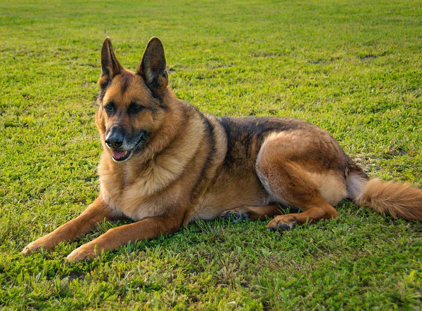
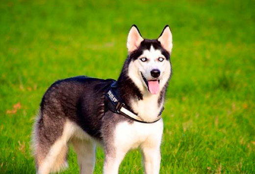
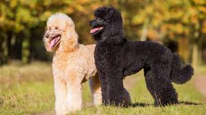
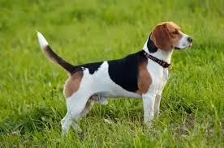
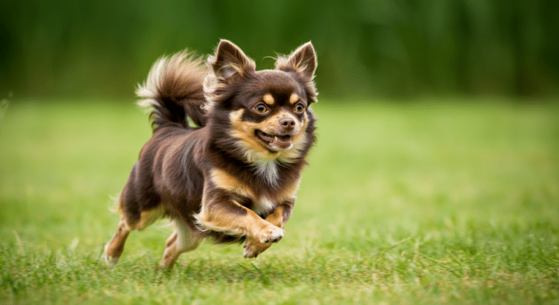

Conoce algunas razas populares
Labrador Retriever

Tamaño: Grande
Salud: Generalmente buena, aunque puede presentar displasia de cadera.
Temperamento: Amigable, juguetón y leal.
Bulldog Francés
Tamaño: Pequeño
Salud: Puede tener problemas respiratorios debido a su hocico corto.
Temperamento: Cariñoso, tranquilo y sociable.
Pastor Alemán
Tamaño: Grande
Salud: Puede desarrollar problemas de cadera en la vejez.
Temperamento: Protector, inteligente y leal.
Husky Siberiano
Tamaño: Mediano
Salud: Generalmente buena, pero requiere mucho ejercicio físico.
Temperamento: Enérgico, independiente y amigable.
Poodle
Tamaño: Varía (toy, mediano, grande)
Salud: Generalmente buena, aunque puede presentar problemas de oído.
Temperamento: Inteligente, activo y cariñoso.
Beagle
Tamaño: Mediano
Salud: Robusto, aunque puede sufrir de obesidad si no se controla su dieta.
Temperamento: Curioso, alegre y sociable.
Chihuahua
Tamaño: Muy pequeño
Salud: Puede sufrir problemas dentales y de corazón.
Temperamento: Valiente, alerta y apegado a sus dueños.